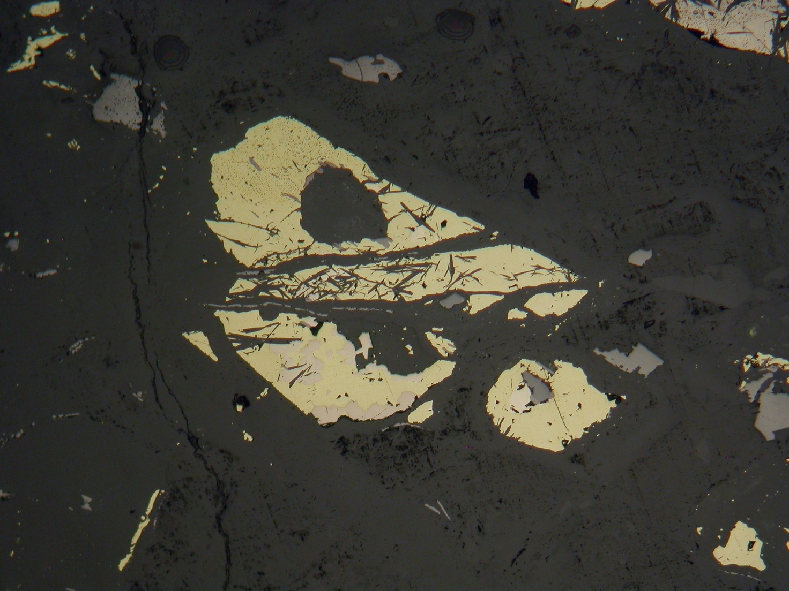
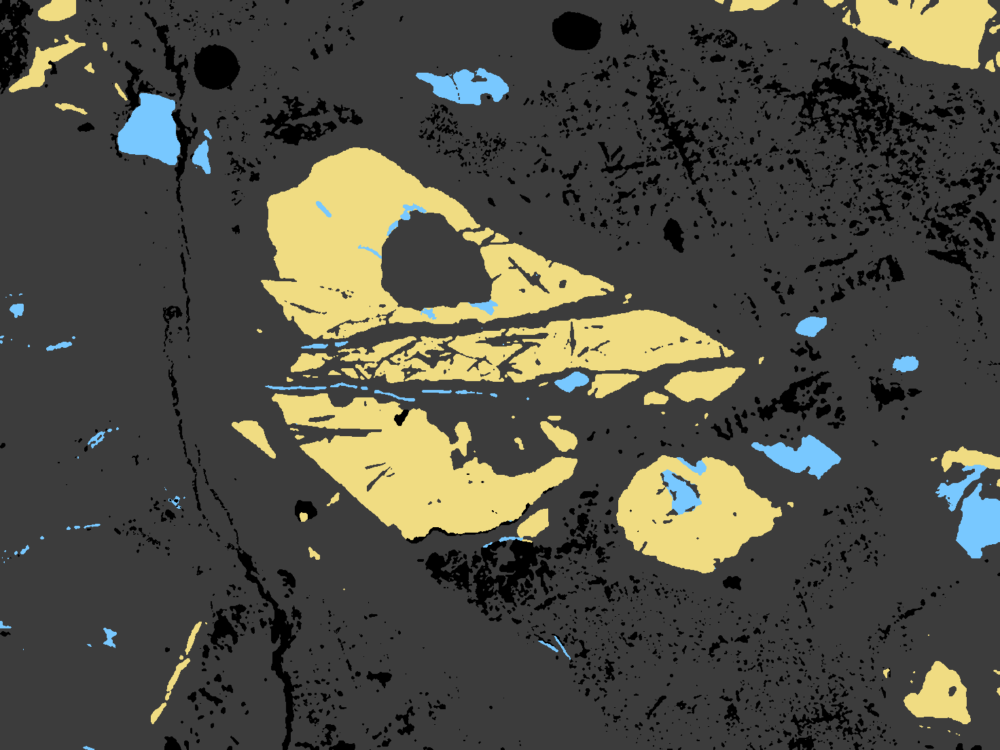
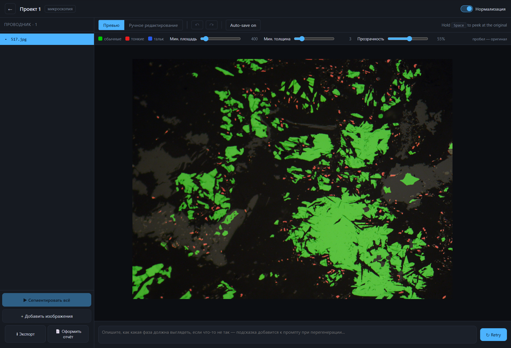
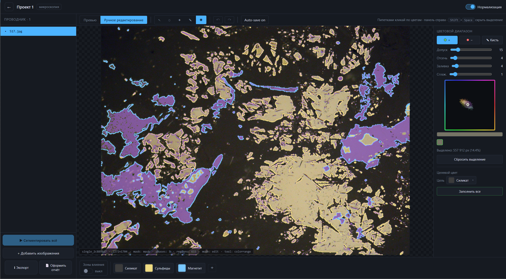
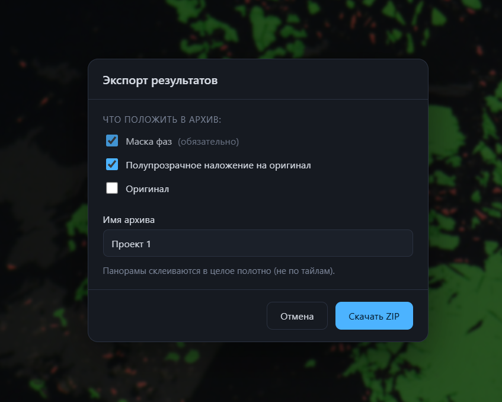

снимок маска фазРазные геологи по-разному читают характер срастаний и долю талька — воспроизводимость между лабораториями падает.
Ручная сегментация и подсчёт площадей фаз на снимках высокого разрешения — часы на один образец.
Панорамы до нескольких гигапикселей; партии из десятков и сотен шлифов превращают анализ в бутылочное горлышко.
«Преобладание» обычных или тонких срастаний на глаз не даёт процентов для технологических карт.
Разное освещение, контраст, царапины и артефакты полировки ломают жёсткие пороговые алгоритмы.
Объективная, быстрая, масштабируемая — и проверяемая геологом.

Одиночные снимки и панорамы, пакетная обработка. Нейросеть раскрашивает минеральные фазы.
Цветовая маска поверх снимка + живая настройка классификации. Геолог видит, где что.
Полноценный редактор маски: лассо, палочка, кисть, цветовой диапазон — режим экспертной проверки.
Класс руды, фазовый состав, метрики → PDF и ZIP. Работает локально с конфиденциальными данными.
Сначала нейросеть отделяет 4 минеральные фазы. Затем детерминированный слой считает геометрию сульфидов и применяет экспертное правило классификации руды — прозрачно и проверяемо.
Нормализация даёт устойчивость к съёмке, тайлинг — масштаб до гигапикселей, постобработка — чистые границы, а fal.ai снимает требование локального GPU.
Аффинный подгон каналов R и B под G по малонасыщенным (серым) пикселям — 2 итерации, чтобы каст не маскировал сам себя. Форму гистограммы не трогаем, только растяжение + сдвиг.
Чёрная и белая точки по перцентилям 0.3% / 99.7% яркости, растяжка к эталону одинаково по всем каналам — цвет не искажается, засветы и провалы уходят.
Снимок с большой стороной > 5000 px → панорама. Режем на тайлы 2208×1656 с гарантированным перекрытием, чтобы фазы на стыках не терялись.
Каждый тайл нормализуется от единой панорамы, уходит в модель, маска возвращается в нативное разрешение бикубиком с переснапом к палитре.
Тайлы обрезаются по cropBox (без перекрытия) и склеиваются в цельное полотно — без видимых швов. Цель: до 10000×10000 ≤ 5 минут.
Из сульфидов выделяем тонкие срастания по площади и толщине ≈ площадь/периметр (ловит ветвистые). Пороги настраиваются вживую на каждый файл.

Live-wire по границам фаз, считается в web worker
Выбор по цветовому сходству с порогом
Свободная правка целевой фазой
Вектороскоп Cb-Cr, пипетки +/−
Защита готовых фаз от случайной правки
Привязка к фиксированной палитре фаз
Фазовый состав (донат), структура срастаний, логика классификации, распределение включений по размеру, сводка по изображениям и текстовое заключение — всё на реальных метриках, без «уверенности» и выдуманных чисел.

Панорамы склеиваются в цельное полотно, а не по тайлам.
Пиксельных эталонных масок организаторы не выдавали. Разметка шла фломастером поверх фото в Paint — цветной линией по срастаниям. Пиксель-в-пиксель сравнивать не с чем: посчитать честный F1 / IoU физически невозможно.
| Требование | Статус |
|---|---|
| Устойчивость к вариациям данных освещение, контраст, артефакты | ✓ normalize_v4 |
| Интерпретируемость визуальная проверка + правка | ✓ маска + редактор |
| Практическая интеграция от TIFF/PNG до отчёта | ✓ ZIP + PDF |
| Локальное развёртывание конфиденциальные данные | ✓ self-hosted |
| Пакетная обработка серии без участия юзера | ✓ batch |
| Адаптация к новым рудам transfer learning | ✓ LoRA + active learning |
Live-wire лассо и magic wand считаются в отдельном потоке — UI остаётся отзывчивым даже на снимках 40× зума.